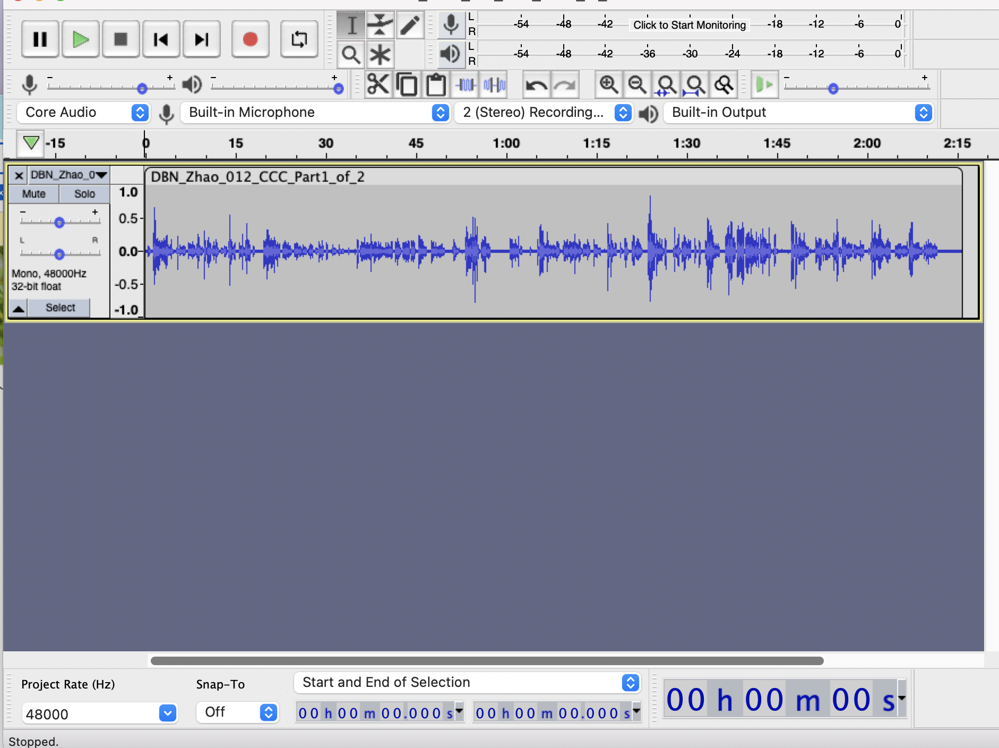

Chapter 8 Frequently Asked Questions
8.4 Does Databrary offer “blind review”?
Databrary is a restricted access data repository that promotes the storage and sharing of identifiable and sensitive data. As such, Databrary has unique policies to protect the privacy of research participants. These policies govern who can access identifiable data and under what circumstances. The policies are codified in a formal access agreement that binds NYU, Databrary’s parent institution, and similar institutions where Databrary’s users conduct research. For the forseeable future, these policies make it impossible to support full double-blinded anonymous review of data and materials.
While some data and materials are shared with the public, Databrary restricts access to sensitive and identifiable information to people who have received authorization from an institution or to those whose access is supervised by an authorized investigator. Only authorized investigators can create and share datasets. Dataset creators, not Databrary, determine what level of sharing is appropriate for individual data files and for datasets as a whole.
So, the level of access a reviewer can have to a dataset depends on two things: Has the dataset been shared with the Databrary community? Does the reviewer have authorization from an institution to view restricted data or materials?
If both answers are yes, the reviewer may fully vet a shared dataset. Databrary does not report on access to specific datasets, so the reviewer can remain anonymous. Databrary does not mask the identities of dataset owners, so the blinding is only one-way.
If the dataset is shared, but the reviewer does not have authorization from an institution, the reviewer can confirm that a shared dataset exists, that the dataset has a persistent identifier, and that the dataset has a specific number of shared restricted access files. The reviewer may also examine any items that are shared with the public, stimuli, protocol, aggregated and de-identified datasets, etc.
8.6 level of access for sessions vs. level of access for each specific file if they set a sessions folder to a specific level of access, they don’t need to do it again for each of the files they upload to that session
8.7 Fix an audio file that is not playing in Databrary
- download original session from Databrary and unzip the file
- open audacity
- file > open
- select the file from the appropriate folder in the downloads folder
- Now the file shows up in audacity

- Go to File > export > export as MP3
- use the following default parameters

- if your file is named incorrectly (e.g. spaces/brackets/filename truncated) please edit the filename here.
a window pops up called ‘edit metadata tags’. just select OK
This new file needs to be replaced in the Databrary session folder.
8.8 Fix a video file that is not playing in Databrary
If you ever find that there are videos that don’t play in Databrary, the following instructions may be helpful to you.
- use Handbrake (https://handbrake.fr/) to convert/transcode these files to .mp4 (this will change and fix the file if there is any corrupted block)
- Go back to the session
- highlight the video
- click on the pencil in the upper left corner to edit
- click on ‘replace’ in the upper right corner
The default settings in Handbrake should work just fine.
8.9 Oops, I uploaded the wrong file in my session. Can I replace it?
Yes! Please follow these instructions:
- Login to Databrary
- Click on ‘Your Profile’ in the center of the screen
- Navigate to the appropriate volume
- Then the appropriate session
- Single Click on the file that needs to be replaced.
- Click on the Edit Button (the small pencil)
- Ensure the appropriate file is highlighted in gray.
- Click ‘Replace File’ at the top right of the screen
- Navigate in the files pane to the correct file then select Open
8.10 I downloaded files from Databrary, but the filenames are truncated.
When Databrary downloads files there is a 32 character filename limit. Please ensure the file names do not exceed this.
If the file name is too long (the first 32 characters of the filename are exactly the same), it is impossible to distinguish between these files when they download and only one file will be downloaded.
8.12 I have a multisite study is there a recommendation on volume/file naming schemes?
Try naming the each volume: ProjectName_SITEID
** emphasize this in a box of some type ** Please note: The Short Name is INTERNAL only to volume Investigators and Collaborators
Where each SITEID has a unique id to each site, typically with the same number of characters.
Each file uploaded can have a standard naming scheme which includes the SITEID.
In the Volume Description, list the name of the university/institution in full. This allows for use of an API pull to ingest data when necessary.
After all data are collected, a new volume with ALL of the final data, including which data are from which site, can be created.